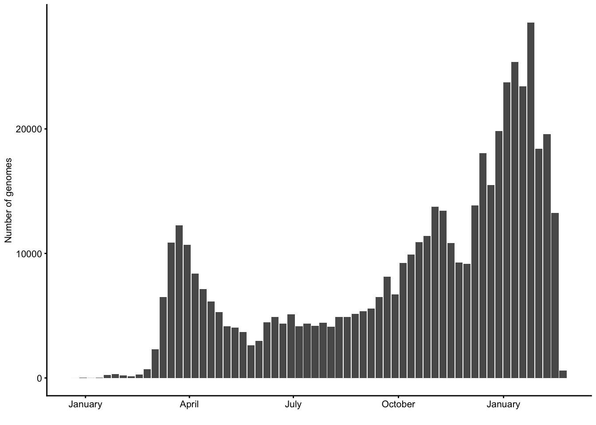
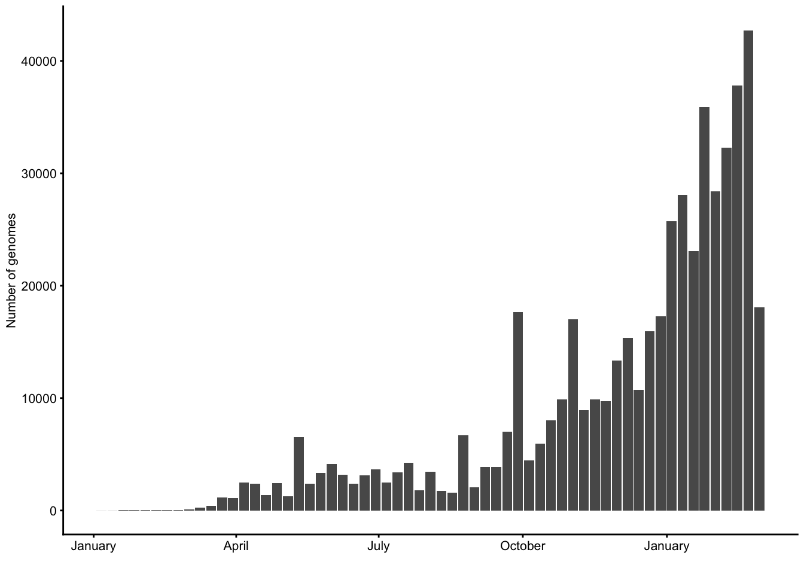
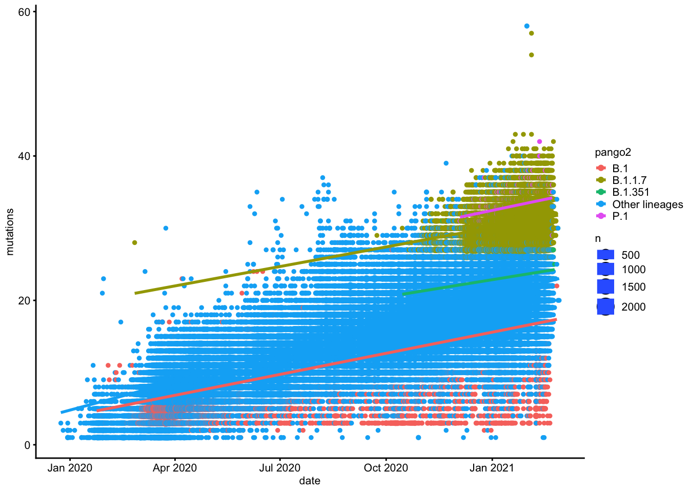
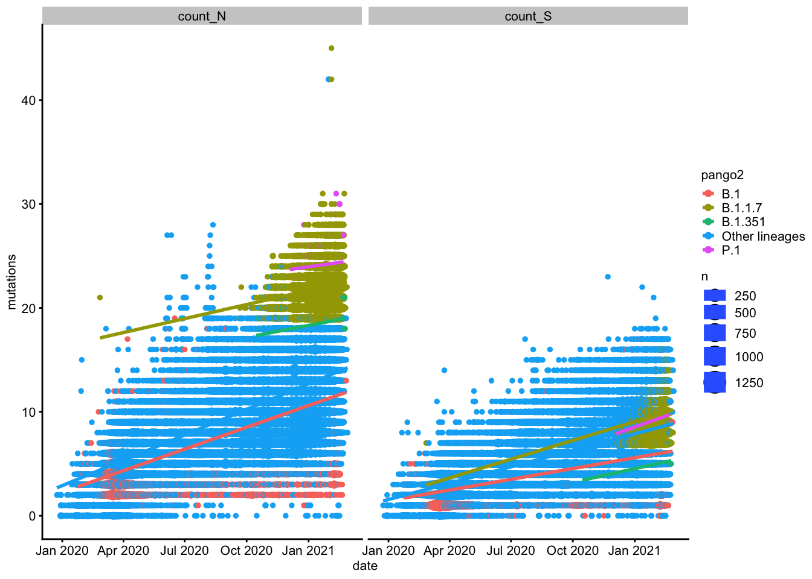
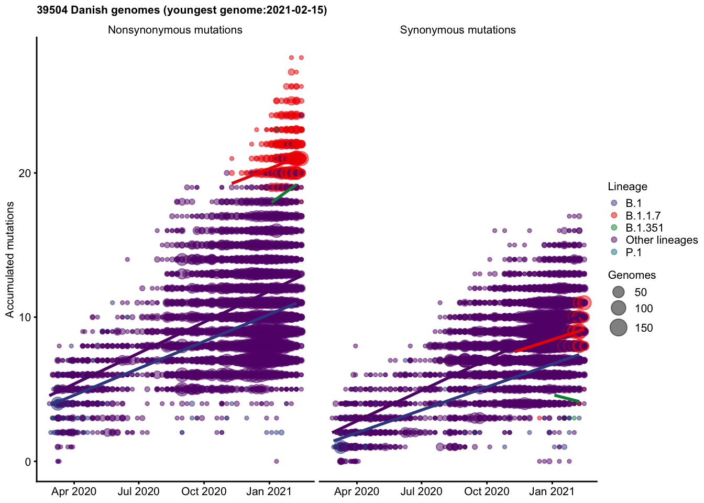
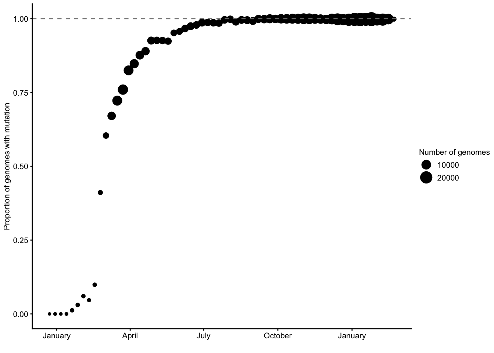
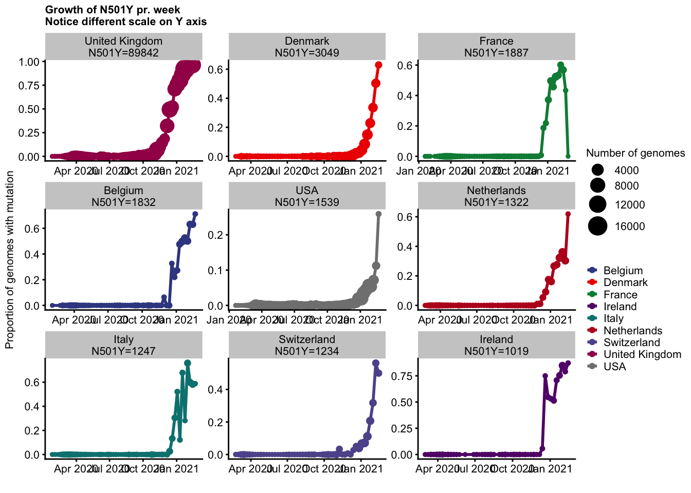
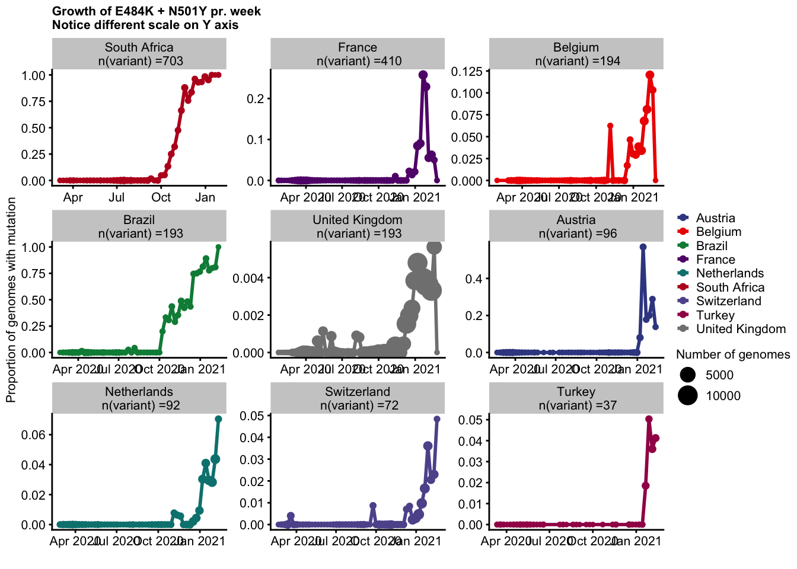
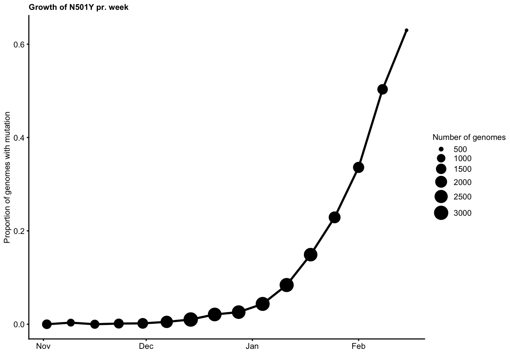

Last updated: 2021-04-08
Checks: 6 1
Knit directory: sars-cov2-gisaid/
This reproducible R Markdown analysis was created with workflowr (version 1.6.2). The Checks tab describes the reproducibility checks that were applied when the results were created. The Past versions tab lists the development history.
The R Markdown is untracked by Git. To know which version of the R Markdown file created these results, you’ll want to first commit it to the Git repo. If you’re still working on the analysis, you can ignore this warning. When you’re finished, you can run wflow_publish to commit the R Markdown file and build the HTML.
Great job! The global environment was empty. Objects defined in the global environment can affect the analysis in your R Markdown file in unknown ways. For reproduciblity it’s best to always run the code in an empty environment.
The command set.seed(20210408) was run prior to running the code in the R Markdown file. Setting a seed ensures that any results that rely on randomness, e.g. subsampling or permutations, are reproducible.
Great job! Recording the operating system, R version, and package versions is critical for reproducibility.
Nice! There were no cached chunks for this analysis, so you can be confident that you successfully produced the results during this run.
Great job! Using relative paths to the files within your workflowr project makes it easier to run your code on other machines.
Great! You are using Git for version control. Tracking code development and connecting the code version to the results is critical for reproducibility.
The results in this page were generated with repository version 790cc80. See the Past versions tab to see a history of the changes made to the R Markdown and HTML files.
Note that you need to be careful to ensure that all relevant files for the analysis have been committed to Git prior to generating the results (you can use wflow_publish or wflow_git_commit). workflowr only checks the R Markdown file, but you know if there are other scripts or data files that it depends on. Below is the status of the Git repository when the results were generated:
Ignored files:
Ignored: data/.DS_Store
Untracked files:
Untracked: analysis/1_working_with_the_data.snpeff.v1.rmd
Untracked: data/2021-03-05/
Unstaged changes:
Modified: data/README.md
Note that any generated files, e.g. HTML, png, CSS, etc., are not included in this status report because it is ok for generated content to have uncommitted changes.
There are no past versions. Publish this analysis with wflow_publish() to start tracking its development.
data_path <- "data/2021-03-05/"library(tidyverse)
library(cowplot) # For theme
library(lubridate)
library(ggsci)
library(ggrepel)
text_base_size <- 8 # in pt
ggplot_text_size <- text_base_size / ggplot2::.pt
# Now use: geom_text(..., size = ggplot_text_size)
theme_set(theme_cowplot(font_size = text_base_size,
rel_small = 1, rel_tiny = 1,
rel_large = 1))
mutations <- read_rds(paste(data_path, "/mutations_snpeff_annotated_tidy.rds", sep=""))
metadata <- read_rds(paste(data_path, "/metadata_snpeff_tidy.rds",sep=""))
x <- Sys.setlocale(locale = "English")
rm(x)x <- head(mutations, n = 1) %>% t()
tibble(variable = rownames(x), value=x[,1]) %>%
knitr::kable()| variable | value |
|---|---|
| id | 1000000 |
| CHROM | NC_045512 |
| position | 913 |
| ref_base | C |
| variant_base | T |
| gene | ORF1ab_pp1a |
| biotype | protein_coding |
| impact | LOW |
| effect | synonymous_variant |
| hgvs_c | c.648C>T |
| hgvs_p | p.Ser216Ser |
| aa_position | 216 |
| type | S |
| aa_change | S216S |
x <- head(metadata, n = 1) %>% t()
tibble(variable = rownames(x), value=x[,1]) %>%
knitr::kable()| variable | value |
|---|---|
| id | 426900 |
| strain | Australia/NT12/2020 |
| virus | ncov |
| gisaid_epi_isl | EPI_ISL_426900 |
| genbank_accession | ? |
| date | NA |
| region | Oceania |
| country | Australia |
| division | Northern Territory |
| location | NA |
| region_exposure | Oceania |
| country_exposure | Australia |
| division_exposure | Northern Territory |
| segment | genome |
| length | 29862 |
| host | Human |
| age | ? |
| sex | ? |
| Nextstrain_clade | 20A |
| pangolin_lineage | B.1 |
| GISAID_clade | G |
| originating_lab | Royal Darwin Hospital Pathology |
| submitting_lab | Microbiological Diagnostic Unit Public Health Laboratory and Victorian Infectious Diseases Reference Laboratory, Doherty Institute |
| authors | Meumann et al |
| url | https://www.gisaid.org |
| title | ? |
| paper_url | ? |
| date_submitted | 2020-04-17 |
| purpose_of_sequencing | ? |
| species | Human |
| Virus name | NA |
| Accession ID | NA |
| Collection date | NA |
| Location | NA |
| Host | NA |
| Additional location information | NA |
| Gender | NA |
| Patient age | NA |
| Patient status | NA |
| Passage | NA |
| Specimen | NA |
| Additional host information | NA |
| Lineage | NA |
| Clade | NA |
| count_N | 3 |
| count_S | 2 |
rm(x)pd <- tibble() %>%
bind_rows(tibble("Description" = "Genomes total",
"n" = metadata %>% select(id) %>% distinct() %>% count() %>% pull(n) )) %>%
bind_rows(tibble("Description" = "Mutations in these genomes",
"n" = mutations %>% distinct(id, position) %>% count() %>% pull(n))) %>%
bind_rows(tibble("Description" = "Genomes with mutations in protein coding regions",
"n" = mutations %>% select(id) %>% distinct() %>% count() %>% pull(n) )) %>%
bind_rows(tibble("Description" = "Unique mutations total",
"n" = mutations %>% select(position, variant_base) %>% distinct() %>% count() %>% pull(n) )) %>%
bind_rows(tibble("Description" = "Unique positions mutated",
"n" = mutations %>% select(position) %>% distinct() %>% count() %>% pull(n) )) %>%
bind_rows(tibble("Description" = "Unique Synonymous mutations",
"n" = mutations %>% filter(type=="S") %>% select(position, variant_base) %>% distinct() %>% count() %>% pull(n) )) %>%
bind_rows(tibble("Description" = "Unique Nonsynonymous mutations",
"n" = mutations %>% filter(type=="N") %>% select(position, variant_base) %>% distinct() %>% count() %>% pull(n) )) %>%
bind_rows(tibble("Description" = "Sites with Synonymous mutations",
"n" = mutations %>% filter(type=="S") %>% select(position) %>% distinct() %>% count() %>% pull(n) )) %>%
bind_rows(tibble("Description" = "Sites with Nonsynonymous mutations",
"n" = mutations %>% filter(type=="N") %>% select(position) %>% distinct() %>% count() %>% pull(n) )) %>%
bind_rows(tibble("Description" = "Human genomes",
"n" = metadata %>% filter(species=="Human") %>% count() %>% pull(n) )) %>%
bind_rows(tibble("Description" = "Mink genomes",
"n" = metadata %>% filter(species=="Mink") %>% count() %>% pull(n) )) %>%
bind_rows(tibble("Description" = "Other genomes",
"n" = metadata %>% filter(!species %in% c("Human","Mink")) %>% count() %>% pull(n) )) %>%
bind_rows(tibble("Description" = "Samples with Patient status",
"n" = metadata %>% filter(!is.na(`Patient status`)) %>% count() %>% pull(n) )) %>%
{.}
knitr::kable(pd)| Description | n |
|---|---|
| Genomes total | 521317 |
| Mutations in these genomes | 9323249 |
| Genomes with mutations in protein coding regions | 520765 |
| Unique mutations total | 43426 |
| Unique positions mutated | 24826 |
| Unique Synonymous mutations | 14604 |
| Unique Nonsynonymous mutations | 28827 |
| Sites with Synonymous mutations | 9911 |
| Sites with Nonsynonymous mutations | 17788 |
| Human genomes | 520589 |
| Mink genomes | 728 |
| Other genomes | 0 |
| Samples with Patient status | 27085 |
metadata %>%
filter(species=="Human") %>%
filter(!is.na(`Patient status`)) %>%
mutate(date2=floor_date(ymd(`Collection date`),"month")) %>%
count(date2) %>%
knitr::kable()Warning: Problem with `mutate()` input `date2`.
ℹ 8726 failed to parse.
ℹ Input `date2` is `floor_date(ymd(`Collection date`), "month")`.Warning: 8726 failed to parse.| date2 | n |
|---|---|
| 2019-12-01 | 7 |
| 2020-01-01 | 168 |
| 2020-02-01 | 451 |
| 2020-03-01 | 2486 |
| 2020-04-01 | 2125 |
| 2020-05-01 | 1246 |
| 2020-06-01 | 1160 |
| 2020-07-01 | 1509 |
| 2020-08-01 | 882 |
| 2020-09-01 | 709 |
| 2020-10-01 | 695 |
| 2020-11-01 | 627 |
| 2020-12-01 | 1492 |
| 2021-01-01 | 3163 |
| 2021-02-01 | 1628 |
| NA | 8726 |
metadata %>%
filter(species=="Human") %>%
filter(!is.na(`Patient status`)) %>%
mutate(date2=str_sub(`Collection date`, start = 1, end = 7)) %>%
count(date2) %>%
knitr::kable()| date2 | n |
|---|---|
| 2019-12 | 7 |
| 2020 | 141 |
| 2020-01 | 168 |
| 2020-02 | 477 |
| 2020-03 | 2811 |
| 2020-04 | 4574 |
| 2020-05 | 1579 |
| 2020-06 | 1471 |
| 2020-07 | 3368 |
| 2020-08 | 3581 |
| 2020-09 | 1099 |
| 2020-10 | 698 |
| 2020-11 | 627 |
| 2020-12 | 1492 |
| 2021 | 125 |
| 2021-01 | 3227 |
| 2021-02 | 1629 |
metadata %>%
filter(species=="Human") %>%
filter(!is.na(`Patient status`)) %>%
mutate(date2=floor_date(date,"month")) %>%
count(date2,region) %>%
pivot_wider(names_from = region, values_from=n, values_fill=0 ) %>%
knitr::kable()| date2 | Asia | Europe | Oceania | Africa | North America | South America |
|---|---|---|---|---|---|---|
| 2019-12-01 | 7 | 0 | 0 | 0 | 0 | 0 |
| 2020-01-01 | 154 | 10 | 4 | 0 | 0 | 0 |
| 2020-02-01 | 332 | 98 | 7 | 1 | 9 | 4 |
| 2020-03-01 | 823 | 990 | 6 | 52 | 352 | 265 |
| 2020-04-01 | 859 | 488 | 0 | 45 | 377 | 356 |
| 2020-05-01 | 661 | 260 | 0 | 25 | 81 | 219 |
| 2020-06-01 | 643 | 153 | 0 | 110 | 146 | 108 |
| 2020-07-01 | 514 | 112 | 0 | 630 | 155 | 98 |
| 2020-08-01 | 214 | 263 | 0 | 177 | 93 | 135 |
| 2020-09-01 | 185 | 258 | 0 | 207 | 34 | 25 |
| 2020-10-01 | 94 | 337 | 0 | 186 | 39 | 40 |
| 2020-11-01 | 220 | 275 | 0 | 79 | 27 | 25 |
| 2020-12-01 | 291 | 842 | 0 | 12 | 243 | 104 |
| 2021-01-01 | 134 | 2588 | 1 | 85 | 103 | 252 |
| 2021-02-01 | 27 | 1517 | 0 | 0 | 28 | 56 |
| NA | 8485 | 181 | 0 | 9 | 47 | 2 |
metadata %>%
filter(species=="Human") %>%
filter(!is.na(`Patient status`)) %>%
mutate(mutation_bin=cut(count_S+count_N, breaks = seq(0,100,by = 5))) %>%
mutate(date2=floor_date(date,"month")) %>%
count(mutation_bin,date2) %>%
pivot_wider(names_from = mutation_bin, values_from=n, values_fill=0 ) %>%
knitr::kable()| date2 | (0,5] | (5,10] | (10,15] | (15,20] | (20,25] | (25,30] | (30,35] | (35,40] | NA |
|---|---|---|---|---|---|---|---|---|---|
| 2019-12-01 | 5 | 0 | 0 | 0 | 0 | 0 | 0 | 0 | 2 |
| 2020-01-01 | 126 | 11 | 1 | 0 | 0 | 0 | 0 | 0 | 30 |
| 2020-02-01 | 351 | 69 | 5 | 0 | 0 | 0 | 0 | 0 | 26 |
| 2020-03-01 | 897 | 1462 | 88 | 10 | 1 | 0 | 0 | 0 | 30 |
| 2020-04-01 | 298 | 1623 | 202 | 2 | 0 | 0 | 0 | 0 | 0 |
| 2020-05-01 | 122 | 774 | 336 | 12 | 0 | 0 | 0 | 0 | 2 |
| 2020-06-01 | 71 | 550 | 487 | 49 | 1 | 2 | 0 | 0 | 0 |
| 2020-07-01 | 27 | 532 | 842 | 104 | 4 | 0 | 0 | 0 | 0 |
| 2020-08-01 | 4 | 158 | 516 | 179 | 22 | 2 | 1 | 0 | 0 |
| 2020-09-01 | 3 | 64 | 336 | 246 | 50 | 10 | 0 | 0 | 0 |
| 2020-10-01 | 2 | 30 | 230 | 293 | 133 | 8 | 0 | 0 | 0 |
| 2020-11-01 | 3 | 16 | 165 | 325 | 98 | 14 | 5 | 0 | 0 |
| 2021-01-01 | 1 | 4 | 108 | 483 | 909 | 1065 | 572 | 21 | 0 |
| 2021-02-01 | 1 | 1 | 13 | 175 | 301 | 550 | 560 | 27 | 0 |
| NA | 185 | 2777 | 4305 | 1224 | 108 | 83 | 39 | 1 | 2 |
| 2020-12-01 | 0 | 13 | 184 | 647 | 392 | 191 | 63 | 2 | 0 |
Simple example of coding metadata with a specific mutation
tmp1 <- mutations %>%
filter(gene=="S" & aa_change=="D614G")
pd <- metadata %>%
filter(species=="Human") %>%
filter(!is.na(`Patient status`)) %>%
mutate(mutation = ifelse(id %in% tmp1$id, "Mutated", "No mutation"))
pd %>%
count(mutation) %>%
knitr::kable()| mutation | n |
|---|---|
| Mutated | 24659 |
| No mutation | 2415 |
Simple example of coding metadata with a specific mutation
tmp1 <- mutations %>%
filter(hgvs_p=="p.Asn501Tyr")
pd <- metadata %>%
filter(species=="Human") %>%
mutate(mutation = ifelse(id %in% tmp1$id, "Mutated", "No mutation"))
pd %>%
count(mutation) %>%
knitr::kable()| mutation | n |
|---|---|
| Mutated | 109154 |
| No mutation | 411435 |
Beware! This is the raw patient metadata - they need to be cleaned!
tmp1 <- mutations %>%
filter(aa_change=="N501Y")
pd <- metadata %>%
filter(species=="Human") %>%
mutate(mutation = ifelse(id %in% tmp1$id, "Has mutation", "Wildtype"))
pd %>%
group_by(`Gender`) %>%
count(mutation) %>%
knitr::kable()| Gender | mutation | n |
|---|---|---|
| Female | Has mutation | 1265 |
| Female | Wildtype | 6298 |
| Male | Has mutation | 1191 |
| Male | Wildtype | 7734 |
| Not reported to protect privacy | Wildtype | 1 |
| unknown | Has mutation | 400 |
| unknown | Wildtype | 10185 |
| NA | Has mutation | 106298 |
| NA | Wildtype | 387217 |
pd %>%
mutate(Gender = str_to_lower(Gender)) %>%
mutate(Gender = ifelse(Gender=="woman", "female", Gender)) %>%
mutate(Gender = ifelse(Gender=="unknown", "unknown", Gender)) %>%
group_by(region,Gender) %>%
summarise(mutated = sum(mutation=="Mutated"),
not_mutated = sum(mutation!="Mutated")) %>%
arrange(region, Gender) %>%
knitr::kable()`summarise()` regrouping output by 'region' (override with `.groups` argument)| region | Gender | mutated | not_mutated |
|---|---|---|---|
| Africa | female | 0 | 906 |
| Africa | male | 0 | 565 |
| Africa | unknown | 0 | 147 |
| Africa | NA | 0 | 3503 |
| Asia | female | 0 | 1605 |
| Asia | male | 0 | 3103 |
| Asia | unknown | 0 | 8935 |
| Asia | NA | 0 | 21899 |
| Europe | female | 0 | 3762 |
| Europe | male | 0 | 3701 |
| Europe | unknown | 0 | 909 |
| Europe | NA | 0 | 329488 |
| North America | female | 0 | 674 |
| North America | male | 0 | 917 |
| North America | not reported to protect privacy | 0 | 1 |
| North America | unknown | 0 | 142 |
| North America | NA | 0 | 120284 |
| Oceania | female | 0 | 7 |
| Oceania | male | 0 | 11 |
| Oceania | NA | 0 | 14438 |
| South America | female | 0 | 609 |
| South America | male | 0 | 628 |
| South America | unknown | 0 | 452 |
| South America | NA | 0 | 3903 |
mutations %>%
group_by(gene, type) %>%
count() %>%
knitr::kable()| gene | type | n |
|---|---|---|
| E | N | 10035 |
| E | S | 12537 |
| M | N | 24497 |
| M | S | 193753 |
| N | N | 1269052 |
| N | S | 330386 |
| ORF10 | N | 106380 |
| ORF10 | S | 3975 |
| ORF1ab_pp1a | N | 1266064 |
| ORF1ab_pp1a | S | 1587124 |
| ORF1ab_pp1ab | N | 2286539 |
| ORF1ab_pp1ab | S | 2436193 |
| ORF3a | N | 321140 |
| ORF3a | S | 52868 |
| ORF6 | N | 9293 |
| ORF6 | S | 9557 |
| ORF7a | N | 30242 |
| ORF7a | S | 15800 |
| ORF7b | N | 14421 |
| ORF7b | S | 14370 |
| ORF8 | N | 301835 |
| ORF8 | S | 90946 |
| S | N | 1585655 |
| S | S | 203773 |
mutations %>%
group_by(gene) %>%
summarise(N=sum(type=="N"),
S=sum(type=="S"),
NS = N/S) %>%
arrange(desc(NS)) %>%
knitr::kable()`summarise()` ungrouping output (override with `.groups` argument)| gene | N | S | NS |
|---|---|---|---|
| ORF10 | 106380 | 3975 | 26.7622642 |
| S | 1585655 | 203773 | 7.7814774 |
| ORF3a | 321140 | 52868 | 6.0743739 |
| N | 1269052 | 330386 | 3.8411192 |
| ORF8 | 301835 | 90946 | 3.3188376 |
| ORF7a | 30242 | 15800 | 1.9140506 |
| ORF7b | 14421 | 14370 | 1.0035491 |
| ORF6 | 9293 | 9557 | 0.9723763 |
| ORF1ab_pp1ab | 2286539 | 2436193 | 0.9385705 |
| E | 10035 | 12537 | 0.8004307 |
| ORF1ab_pp1a | 1266064 | 1587124 | 0.7977096 |
| M | 24497 | 193753 | 0.1264342 |
pd <- metadata %>%
filter(species=="Human") %>%
mutate(date_bin = cut(date, breaks = "1 week")) %>%
group_by(date_bin) %>%
count()
newlevels <- sort(levels(pd$date_bin))
pd <- pd %>%
mutate(date_bin = fct_relevel(date_bin, newlevels)) %>%
ungroup() %>%
mutate(date_bin=ymd(date_bin))
ggplot(pd, aes(x=date_bin, y=n)) +
geom_col() +
xlab("Sample collection date") +
ylab("Number of genomes") +
scale_x_date(name = "", date_labels = "%B") +
NULLWarning: Removed 1 rows containing missing values (position_stack).
pd <- metadata %>%
filter(species=="Human") %>%
mutate(date_bin = cut(ymd(date_submitted ), breaks = "1 week")) %>%
group_by(date_bin) %>%
count()
newlevels <- sort(levels(pd$date_bin))
pd <- pd %>%
mutate(date_bin = fct_relevel(date_bin, newlevels)) %>%
ungroup() %>%
mutate(date_bin=ymd(date_bin))
ggplot(pd, aes(x=date_bin, y=n)) +
geom_col() +
xlab("Sample submission date") +
ylab("Number of genomes") +
scale_x_date(name = "", date_labels = "%B") +
NULL
tmp <- mutations %>%
group_by(id) %>%
distinct(position) %>%
summarise(mutations = n())`summarise()` ungrouping output (override with `.groups` argument)interesting_lineages <- c("B.1.1.7", "P.1", "B.1", "B.1.351")
pd <- metadata %>%
left_join(tmp) %>%
select(id, mutations,everything()) %>%
filter(species=="Human") %>%
mutate(pango2 = ifelse(pangolin_lineage %in% interesting_lineages,
pangolin_lineage, "Other lineages")) %>%
group_by(date,mutations,pango2) %>%
count()Joining, by = "id"ggplot(pd, aes(x=date, y=mutations, color=pango2, size=n)) +
geom_point() +
geom_smooth(aes(color=pango2), method="lm", se=F) +
NULL`geom_smooth()` using formula 'y ~ x'Warning: Removed 219 rows containing non-finite values (stat_smooth).Warning: Removed 219 rows containing missing values (geom_point).
interesting_lineages <- c("B.1.1.7", "P.1", "B.1", "B.1.351")
pd <- metadata %>%
filter(species=="Human") %>%
mutate(pango2 = ifelse(pangolin_lineage %in% interesting_lineages,
pangolin_lineage, "Other lineages")) %>%
group_by(date,pango2, count_N, count_S) %>%
count() %>%
pivot_longer(names_to = "type",
values_to = "mutations",
cols = c(count_N, count_S))
ggplot(pd, aes(x=date, y=mutations, color=pango2, size=n)) +
geom_point() +
geom_smooth(aes(color=pango2), method="lm", se=F) +
facet_wrap(~type) +
NULL`geom_smooth()` using formula 'y ~ x'Warning: Removed 972 rows containing non-finite values (stat_smooth).Warning: Removed 972 rows containing missing values (geom_point).
interesting_lineages <- c("B.1.1.7", "P.1", "B.1", "B.1.351")
tmp <- metadata %>%
filter(species=="Human" & country=="Denmark") %>%
mutate(pango2 = ifelse(pangolin_lineage %in% interesting_lineages,
pangolin_lineage, "Other lineages"))
pd <- tmp %>%
group_by(date,pango2, count_N, count_S) %>%
count() %>%
pivot_longer(names_to = "type",
values_to = "mutations",
cols = c(count_N, count_S)) %>%
mutate(type = fct_recode(type, "Synonymous mutations"="count_S",
"Nonsynonymous mutations"="count_N"))
ggplot(pd, aes(x=date, y=mutations, color=pango2, size=n)) +
geom_point(alpha=0.5) +
geom_smooth(method="lm", se=F, size=1, show.legend = F) +
ylab("Accumulated mutations") +
facet_wrap(~type) +
theme(axis.title.x = element_blank()) +
scale_color_aaas(name="Lineage") +
scale_size_continuous(name = "Genomes") +
theme(strip.background = element_blank()) +
ggtitle(paste(nrow(tmp), " Danish genomes (youngest genome:", max(pd$date), ")", sep="")) +
NULL`geom_smooth()` using formula 'y ~ x'
tmp1 <- mutations %>%
filter(gene=="S" & aa_change=="D614G")
pd <- metadata %>%
filter(species=="Human") %>%
mutate(mutation = ifelse(id %in% tmp1$id, "mutated", "Other")) %>%
mutate(date_bin = cut(date, breaks = "week")) %>%
group_by(date_bin) %>%
count(mutation)
newlevels <- sort(levels(pd$date_bin))
pd <- pd %>%
mutate(date_bin = fct_relevel(date_bin, newlevels)) %>%
ungroup() %>%
mutate(date_bin=ymd(date_bin)) %>%
pivot_wider(names_from = mutation, values_from=n, values_fill =0)
ggplot(pd, aes(x=date_bin, y=mutated/(mutated+Other), size=mutated+Other))+ geom_point() +
geom_hline(yintercept = 1, linetype="dashed", color="#808080") +
xlab("") +
ylab("Proportion of genomes with mutation") +
scale_size("Number of genomes") +
scale_x_date(name = "", date_labels = "%B") +
NULLWarning: Removed 1 rows containing missing values (geom_point).
Fraction of genomes within the last 28 days.
We must have at least 10 “british variants” and at least 100 genomes total.
tmp1 <- mutations %>%
filter(gene=="S" & aa_change=="N501Y")
x <- metadata %>%
filter(species=="Human") %>%
mutate(mutation = ifelse(id %in% tmp1$id, "mutated", "Other")) %>%
group_by(country) %>%
summarise(n_vui=sum(mutation=="mutated"),
n_total=n()
) %>%
filter(n_vui > 10) %>%
arrange(desc(n_vui)) %>%
slice(1:9)`summarise()` ungrouping output (override with `.groups` argument)knitr::kable(x)| country | n_vui | n_total |
|---|---|---|
| United Kingdom | 89842 | 216651 |
| Denmark | 3049 | 39504 |
| France | 1887 | 7643 |
| Belgium | 1832 | 6558 |
| USA | 1539 | 105130 |
| Netherlands | 1322 | 9499 |
| Italy | 1247 | 5878 |
| Switzerland | 1234 | 12402 |
| Ireland | 1019 | 2626 |
pd <- metadata %>%
filter(species=="Human") %>%
#filter(date > "2020-09-01") %>%
filter(country %in% x$country) %>%
mutate(mutation = ifelse(id %in% tmp1$id, "mutated", "Other")) %>%
mutate(date_bin = cut(date, breaks = "7 days")) %>%
group_by(date_bin, country) %>%
count(mutation)
newlevels <- sort(levels(pd$date_bin))
pd <- pd %>%
mutate(date_bin = fct_relevel(date_bin, newlevels)) %>%
ungroup() %>%
mutate(date_bin=ymd(date_bin)) %>%
pivot_wider(names_from = mutation, values_from=n, values_fill =0) %>%
merge(x) %>%
mutate(label = fct_reorder(paste(country, "\nN501Y=", n_vui,sep=""), .x = n_vui, .desc = TRUE)) %>%
{.}
ggplot(pd, aes(x=date_bin, y=mutated/(mutated+Other),
color=country,
size=mutated+Other) ) +
geom_point() +
geom_line(size=1) +
facet_wrap( ~label, scales = "free") +
xlab("") +
ylab("Proportion of genomes with mutation") +
scale_size("Number of genomes") +
ggsci::scale_color_aaas(name="") +
ggtitle("Growth of N501Y pr. week\nNotice different scale on Y axis") +
NULLWarning: Removed 7 rows containing missing values (geom_point).Warning: Removed 7 row(s) containing missing values (geom_path).
tmp1 <- mutations %>% filter(aa_change=="E484K" & gene=="S")
tmp2 <- mutations %>% filter(aa_change=="N501Y" & gene=="S")
genomes_with_haplotype <- intersect(tmp1$id, tmp2$id)
x <- metadata %>%
filter(species=="Human") %>%
mutate(mutation = ifelse(id %in% genomes_with_haplotype, "mutated", "Other")) %>%
group_by(country) %>%
summarise(n_vui = sum(mutation=="mutated"),
n_total = n(),
fraction = n_vui/n_total
) %>%
filter(n_vui > 10) %>%
arrange(desc(n_vui)) %>%
slice(1:9)`summarise()` ungrouping output (override with `.groups` argument)knitr::kable(x)| country | n_vui | n_total | fraction |
|---|---|---|---|
| South Africa | 703 | 2535 | 0.2773176 |
| France | 410 | 7643 | 0.0536439 |
| Belgium | 194 | 6558 | 0.0295822 |
| Brazil | 193 | 2273 | 0.0849098 |
| United Kingdom | 193 | 216651 | 0.0008908 |
| Austria | 96 | 1931 | 0.0497152 |
| Netherlands | 92 | 9499 | 0.0096852 |
| Switzerland | 72 | 12402 | 0.0058055 |
| Turkey | 37 | 1568 | 0.0235969 |
pd <- metadata %>%
filter(species=="Human") %>%
filter(country %in% x$country) %>%
mutate(mutation = ifelse(id %in% tmp1$id, "mutated", "Other")) %>%
mutate(date_bin = cut(date, breaks = "7 days")) %>%
group_by(date_bin, country) %>%
count(mutation)
newlevels <- sort(levels(pd$date_bin))
pd <- pd %>%
mutate(date_bin = fct_relevel(date_bin, newlevels)) %>%
ungroup() %>%
mutate(date_bin=ymd(date_bin)) %>%
pivot_wider(names_from = mutation, values_from=n, values_fill =0) %>%
merge(x) %>%
mutate(label = fct_reorder(paste(country, "\n n(variant) =", n_vui,sep=""), .x = n_vui, .desc = TRUE)) %>%
{.}
ggplot(pd, aes(x=date_bin, y=mutated/(mutated+Other),
color=country,
size=mutated+Other) ) +
geom_point() +
geom_line(size=1) +
facet_wrap( ~label, scales = "free") +
xlab("") +
ylab("Proportion of genomes with mutation") +
scale_size("Number of genomes") +
ggsci::scale_color_aaas(name="") +
ggtitle("Growth of E484K + N501Y pr. week\nNotice different scale on Y axis") +
NULLWarning: Removed 7 rows containing missing values (geom_point).Warning: Removed 7 row(s) containing missing values (geom_path).
tmp1 <- mutations %>%
filter(gene=="S" & aa_change=="N501Y")
pd <- metadata %>%
filter(species=="Human" & country=="Denmark") %>%
filter(date > "2020-11-01") %>%
mutate(mutation = ifelse(id %in% tmp1$id, "mutated", "Other")) %>%
mutate(date_bin = cut(date, breaks = "7 days")) %>%
group_by(date_bin, country) %>%
count(mutation)
newlevels <- sort(levels(pd$date_bin))
pd <- pd %>%
mutate(date_bin = fct_relevel(date_bin, newlevels)) %>%
ungroup() %>%
mutate(date_bin=ymd(date_bin)) %>%
pivot_wider(names_from = mutation, values_from=n, values_fill =0) %>%
{.}
ggplot(pd, aes(x=date_bin, y=mutated/(mutated+Other),
size=mutated+Other) ) +
geom_point() +
geom_line(size=1) +
xlab("") +
ylab("Proportion of genomes with mutation") +
scale_size("Number of genomes") +
ggsci::scale_color_aaas(name="") +
ggtitle("Growth of N501Y pr. week") +
NULL
sessionInfo()R version 4.0.2 (2020-06-22)
Platform: x86_64-apple-darwin17.0 (64-bit)
Running under: macOS Catalina 10.15.6
Matrix products: default
BLAS: /Library/Frameworks/R.framework/Versions/4.0/Resources/lib/libRblas.dylib
LAPACK: /Library/Frameworks/R.framework/Versions/4.0/Resources/lib/libRlapack.dylib
locale:
[1] en_US.UTF-8/en_US.UTF-8/en_US.UTF-8/C/en_US.UTF-8/en_US.UTF-8
attached base packages:
[1] stats graphics grDevices utils datasets methods base
other attached packages:
[1] ggrepel_0.9.1 ggsci_2.9 lubridate_1.7.9 cowplot_1.1.0
[5] forcats_0.5.0 stringr_1.4.0 dplyr_1.0.2 purrr_0.3.4
[9] readr_1.3.1 tidyr_1.1.1 tibble_3.0.3 ggplot2_3.3.2
[13] tidyverse_1.3.0 workflowr_1.6.2
loaded via a namespace (and not attached):
[1] Rcpp_1.0.5 lattice_0.20-41 assertthat_0.2.1 rprojroot_2.0.2
[5] digest_0.6.25 R6_2.4.1 cellranger_1.1.0 backports_1.1.9
[9] reprex_0.3.0 evaluate_0.14 httr_1.4.2 highr_0.8
[13] pillar_1.4.6 rlang_0.4.7 readxl_1.3.1 rstudioapi_0.11
[17] blob_1.2.1 Matrix_1.2-18 rmarkdown_2.7 splines_4.0.2
[21] labeling_0.3 munsell_0.5.0 broom_0.7.0 compiler_4.0.2
[25] httpuv_1.5.4 modelr_0.1.8 xfun_0.22 pkgconfig_2.0.3
[29] mgcv_1.8-31 htmltools_0.5.0 tidyselect_1.1.0 fansi_0.4.1
[33] crayon_1.3.4 dbplyr_1.4.4 withr_2.2.0 later_1.1.0.1
[37] grid_4.0.2 nlme_3.1-148 jsonlite_1.7.1 gtable_0.3.0
[41] lifecycle_0.2.0 DBI_1.1.0 git2r_0.27.1 magrittr_1.5
[45] scales_1.1.1 cli_2.0.2 stringi_1.4.6 farver_2.0.3
[49] fs_1.5.0 promises_1.1.1 xml2_1.3.2 ellipsis_0.3.1
[53] generics_0.0.2 vctrs_0.3.2 tools_4.0.2 glue_1.4.1
[57] hms_0.5.3 yaml_2.2.1 colorspace_1.4-1 rvest_0.3.6
[61] knitr_1.31 haven_2.3.1